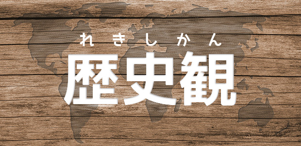

実は昨日は私が担当する高3世界史の2014年度最終授業でした。日程上正確にはあと一回あるのですが、その日は国立入試のあとになりますから、受験に向けた授業としては昨日が最後。毎年この時期になると、授業をしながら走馬燈のようにいろいろな思い出が頭をよぎります。
私は毎年、世界史の最終授業では「世界史を学ぶ意義」について話をしています。高校入試でも大学入試でも社会教科では非常に大量の知識を覚えることを要求されます。その知識の多くは日常生活ではあまり役に立ちません。インドの古代王朝の名前や年号を知っているからといって、何かいいことがあるとはいえませんね。高3になれば生徒達も当然それは分かっています。「こんなもの覚えて何の役に立つの？」という疑問を発したところで、受験で問われるのだから仕方がありません。しかし、受験を終えつつある今だからこそ、世界史の講師として伝えておきたいことがあるのです。
歴史を学ぶ意味、「歴史観」
「歴史観」というものがあります。事実の羅列である過去の記録をどのような判断基準を基に色づけしていくか。この「判断基準」が歴史観です。例えばフランス革命。このできごとを王様の立場から見る場合と市民の立場から見る場合では、見えてくる景色は大きく違うはずです。私たちの歴史はたくさんある「歴史観」のうちの一つ、あるいは複数を採用する形でなりたっています。このような歴史観のなかに、「過去は繰り返す」というものがあります。昔起こった出来事は、表面的な形を変えながらも再び起こる。例えば中国の王朝の盛衰を学んでいると、何百年かのスパンで同じような動きを繰り返しているように見えます。
もし「過去は繰り返す」のであれば、歴史を学ぶ意味ははっきりします。未来にどう生きるべきかを決めるための判断材料として過去のできごとを学ぶというこの考え方は分かりやすいため、一般的によく「歴史を学ぶ意味」として語られています。しかし、これもまた「歴史観」に過ぎません。まず「過去は繰り返す」という歴史の見方が先にあり、それに適合する事例を組み合わせて歴史を作り上げているのです。本当に「繰り返し」ているのか、それとも、そう「思いたい」からそう見えているのか、どちらなのでしょうか。この問いに答えを出すためには、できごとの細部を検討してやる必要があります。細かい事実を検討して初めて、一見繰り返しているようだけれど、実は全然違う出来事であることに気付くことができます。
歴史の細部を綿密に検討すること。その姿勢を身につけることができれば、それまで見えなかったものが見えてきます。私たちが当たり前のものとして理解している歴史は、実は「歴史観」に過ぎないのではないか。他の歴史観もあるのではないか。そのことに気付いたとき、私たちは初めて主体的に歴史と相対できるのです。
近年の日本では、これまで常識と考えられてきた「歴史観」が大きく揺らいでいます。だからこそ、人に与えられた歴史観をつまみ食いするのではなく、自分で考えるためのツールを手に入れてほしいのです。入試で問われる一見無駄な「知識」は、実はこの最も大切なツールなのではないか。そんなことを感じた最終授業でした。